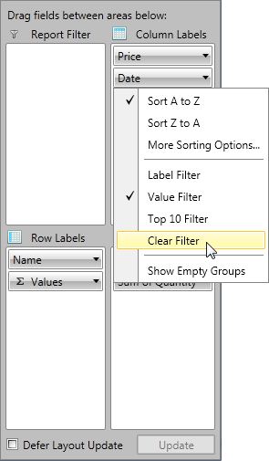

Group Filtering
In this article we will show you how to apply different filters on your RowGroupDescriptions and ColumnGroupDescriptions.
Filter Types
The Data in RadPivotGrid can be filtered based on several conditions to give you a view on specific details or just to make the report shorter.
There are three types of filters you may use on your RowGroupDescriptions/ColumnGroupDescriptions.
Label filter - filters the report based on the Header name.
Value filter - filters the report based on one of the aggregates used.
Top 10 filter - filters the report based on one of the aggregates used, but shows top/bottom results of applied filter.
Label Filter
The LabelFilter is used for filtering the data based on the Headers (row or column). The LabelFilter is using one of the following conditions:
equals - showing only groups which header fully match the parameter we pass.
does not equal - showing all groups which header does NOT match the parameter we pass.
is greater than - show only groups which header is greater than the parameter we pass. Note that you should put in the whole header value which has to be matched.
For example if you have headers "Data1", "Data2", "Data3" and you set this condition with parameter "Data1"
you will see only "Data2" and "Data3" in RadPivotGrid, but if you set the parameter of the condition to "Data"
then all of the groups will show as all of them are greater than "Data" by string comparison.is greater than or equal to - showing only groups which header is greater or equal of the parameter we pass.
is less than - show only groups which header is smaller than the parameter we pass.
is less than or equal to - showing only groups which header is smaller is or equal of the parameter we pass. Note that the full header text has to match
in order to apply the equal comparison.begins with - showing only groups which header starts with the parameter we pass.
does not begin with - showing only groups which header does NOT start with the parameter we pass.
ends with - showing only groups which header ends with the parameter we pass.
does not end with - showing only groups which header does NOT end with the parameter we pass.
contains - showing only groups which header contains the parameter we pass.
does not contain - showing only groups which header does NOT contain the parameter we pass.
is between - showing only groups which header is between the two parameters we pass.
is not between - showing only groups which header is NOT between the two parameters we pass.
All conditions are case sensitive and are using string comparison between the headers of the groups and the passed parameters.
So if we apply a LabelFilter of RadPivotGrid from GettingStarted article with condition begins with and parameter
"P" we will receive the following result: Defining Label Filter
Defining Label Filter
Label Filter can be defined in the XAML, code behind or even at runtime by using RadPivotFieldList.
To apply Label Filter you should set it to the GroupFilter property of the PropertyGroupDescription/DoubleGroupDescription/DateTimeGroupDescription.
To define Label Filter, use the LabelGroupFilter class from Telerik.Pivot.Core.Filtering namespace. Each LabelGroupFilter must have a Condition defined. The Condition can be:
ComparisonCondition - used to compare the Header with the value set in the Than property based on the Condition property.
IntervalCondition - used when you want to show only data that is (not) between two values set in the From and To properties based on the Condition property.
SetCondition - used when you want to show only particular items that include/does not include particular items defined in the Items property based on the Comparison property.
TextCondition - used when you want to filter the data based on a string value defined in Pattern property. The Comparison property gives different options
for the comparison method.ItemsFilterCondition - used when you want to apply to conditions simultaneously (it is mandatory one of them to be SetCondition). ItemsFilterCondition has property Condition where you can set an instance of Comparison, Interval or Text condtions.
The property DistinctCondition needs an instance of SetCondition.
XAML
<pivot:DateTimeGroupDescription PropertyName="Date" Step="Month">
<pivot:DateTimeGroupDescription.GroupFilter>
<pivot:LabelGroupFilter>
<pivot:LabelGroupFilter.Condition>
<pivot:TextCondition Comparison="BeginsWith" Pattern="Pe"/>
</pivot:LabelGroupFilter.Condition>
</pivot:LabelGroupFilter>
</pivot:DateTimeGroupDescription.GroupFilter>
</pivot:DateTimeGroupDescription>
C#
DateTimeGroupDescription dateTimeGroupDescription = new DateTimeGroupDescription();
dateTimeGroupDescription.PropertyName = "Date";
dateTimeGroupDescription.Step = DateTimeStep.Month;
LabelGroupFilter labelFilter = new LabelGroupFilter();
TextCondition textCondition = new TextCondition();
textCondition.Pattern = "Pe";
textCondition.Comparison = TextComparison.BeginsWith;
labelFilter.Condition = textCondition;
dateTimeGroupDescription.GroupFilter = labelFilter;
VB.NET
Dim dateTimeGroupDescription As New DateTimeGroupDescription()
dateTimeGroupDescription.PropertyName = "Date"
dateTimeGroupDescription.Step = DateTimeStep.Month
Dim labelFilter As New LabelGroupFilter()
Dim textCondition As New TextCondition()
textCondition.Pattern = "Pe"
textCondition.Comparison = TextComparison.BeginsWith
labelFilter.Condition = textCondition
dateTimeGroupDescription.GroupFilter = labelFilter
And here is how to apply ItemsFilterCondition:
XAML
<pivot:PropertyGroupDescription PropertyName="Name" >
<pivot:PropertyGroupDescription.GroupFilter>
<pivot:LabelGroupFilter>
<pivot:LabelGroupFilter.Condition>
<pivot:ItemsFilterCondition>
<pivot:ItemsFilterCondition.DistinctCondition>
<pivot:SetCondition Comparison="Includes">
<pivot:SetCondition.Items>
<sys:String>Pencil</sys:String>
<sys:String>Pen</sys:String>
</pivot:SetCondition.Items>
</pivot:SetCondition>
</pivot:ItemsFilterCondition.DistinctCondition>
<pivot:ItemsFilterCondition.Condition>
<pivot:TextCondition Comparison="Contains" Pattern="c" />
</pivot:ItemsFilterCondition.Condition>
</pivot:ItemsFilterCondition>
</pivot:LabelGroupFilter.Condition>
</pivot:LabelGroupFilter>
</pivot:PropertyGroupDescription.GroupFilter>
</pivot:PropertyGroupDescription>
C#
Telerik.Pivot.Core.PropertyGroupDescription propertyGroupDescription = new Telerik.Pivot.Core.PropertyGroupDescription();
propertyGroupDescription.PropertyName = "Name";
var labelFilter = new LabelGroupFilter();
var textCondition = new TextCondition();
textCondition.Pattern = "c";
textCondition.Comparison = TextComparison.Contains;
var setCondition = new SetCondition();
setCondition.Comparison = SetComparison.Includes;
setCondition.Items.Add("Pen");
setCondition.Items.Add("Pencil");
var itemsFilterCondition = new ItemsFilterCondition();
itemsFilterCondition.Condition = textCondition;
itemsFilterCondition.DistinctCondition = setCondition;
labelFilter.Condition = itemsFilterCondition;
propertyGroupDescription.GroupFilter = labelFilter;
VB.NET
Dim propertyGroupDescription As New Telerik.Pivot.Core.PropertyGroupDescription()
propertyGroupDescription.PropertyName = "Name"
Dim labelFilter = New LabelGroupFilter()
Dim textCondition = New TextCondition()
textCondition.Pattern = "c"
textCondition.Comparison = TextComparison.Contains
Dim setCondition = New SetCondition()
setCondition.Comparison = SetComparison.Includes
setCondition.Items.Add("Pen")
setCondition.Items.Add("Pencil")
Dim itemsFilterCondition = New ItemsFilterCondition()
itemsFilterCondition.Condition = textCondition
itemsFilterCondition.DistinctCondition = setCondition
labelFilter.Condition = itemsFilterCondition
propertyGroupDescription.GroupFilter = labelFilter
This way the only visible item will be Pencil as it is part of the SetCondition and also has "c" in its name which satisfies the text condition.
Value Filter
Value Filter is applied on RowGroupDescriptions/ColumnGroupDescriptions based on the GrandTotals of one of the Aggregation descriptions used in
the application. To apply value filter you have to use one of the predefined conditions:
equals - showing only groups which header fully matches the parameter we pass.
does not equal - showing all groups which header does NOT match the parameter we pass.
is greater than - show only groups which header is greater than the parameter we pass.
is greater than or equal to - showing only groups which header is greater or equal of the parameter we pass.
is less than - show only groups which header is smaller than the parameter we pass.
is less than or equal to - showing only groups which header is smaller is or equal of the parameter we pass.
is between - showing only groups which header is between the two parameters we pass.
is not between - showing only groups which header is NOT between the two parameters we pass.
Value Filter is filtering the groups by number comparison between the GrandTotals of the groups and the parameters we pass, while Label Filter is a string filter.
So if we apply a Value Filter on the Name RowGroupDescription from the GettingStarted article, set condition "is greater than" and pass as parameter value 10
we will notice that one of the items is missing because its GrandTotal is less than 10.
RadPivotGrid without Value Filter:
RadPivotGrid after Value Filter is applied: Defining Value Filter
Defining Value Filter
Value Filter can be defined in XAML, code behind or at runtime by using RadPivotFieldList.
Defining in the code is using ValueGroupFilter class from Telerik.Pivot.Core namespace. Each object of this type
must have Condition defined. Condition can be any of these:
ComparisonCondition - used to compare the Header with the value set in the Than property based on the Condition property.
IntervalCondition - used when you want to show only data that is (not) between two values set in the From and To properties based on the Condition property.
XAML
<pivot:DateTimeGroupDescription PropertyName="Date" Step="Month">
<pivot:DateTimeGroupDescription.GroupFilter>
<pivot:ValueGroupFilter AggregateIndex="0">
<pivot:ValueGroupFilter.Condition>
<pivot:IntervalCondition Condition="IsBetween" From="13" To="15"/>
</pivot:ValueGroupFilter.Condition>
</pivot:ValueGroupFilter>
</pivot:DateTimeGroupDescription.GroupFilter>
</pivot:DateTimeGroupDescription>
C#
DateTimeGroupDescription dateTimeGroupDescription = new DateTimeGroupDescription();
dateTimeGroupDescription.PropertyName = "Date";
dateTimeGroupDescription.Step = DateTimeStep.Month;
IntervalCondition intervalCondition = new IntervalCondition();
intervalCondition.Condition = IntervalComparison.IsBetween;
intervalCondition.From = "13";
intervalCondition.To = "15";
ValueGroupFilter valueGroupFilter = new ValueGroupFilter();
valueGroupFilter.Condition = intervalCondition;
valueGroupFilter.AggregateIndex = 0;
dateTimeGroupDescription.GroupFilter = valueGroupFilter;
VB.NET
Dim dateTimeGroupDescription As New DateTimeGroupDescription()
dateTimeGroupDescription.PropertyName = "Date"
dateTimeGroupDescription.Step = DateTimeStep.Month
Dim intervalCondition As New IntervalCondition()
intervalCondition.Condition = IntervalComparison.IsBetween
intervalCondition.From = "13"
intervalCondition.To = "15"
Dim valueGroupFilter As New ValueGroupFilter()
valueGroupFilter.Condition = intervalCondition
valueGroupFilter.AggregateIndex = 0
dateTimeGroupDescription.GroupFilter = valueGroupFilter
Top 10 filter
Top 10 filter is used when you want to show only the top/bottom items based on some criteria. The criteria is one of the Aggregate Descriptions used in the
application. You can show the exact count of top/bottom items to show based on the selected aggregate description, the top items which sum is near the one you set as parameter
or the top/bottom items which sum presents percent of the GrandTotal (you choose the percent).
For example if you have the following RadPivotGrid:

And you apply a Top 10 filter on the Date columns to show the top 4 items based on the Average Price Aggregate Description
the result will be: Defining Top 10 filter
Defining Top 10 filter
You can define Top 10 filter in the XAML, in the code behind or at runtime by using RadPivotFieldList.
When defining this filter you have to note that PropertyGroupDescription, DoubleGroupDescription and DateTimeGroupDescription all have GroupFilter property.
To apply Top 10 filter you can set as GroupFilter any of the following: GroupsCountFilter, GroupsPercentFilter, GroupsSumFilter.
GroupsCountFilter - selects a specific number of groups sorted by a given criteria. It is important to define the Count
property which indicates the number of groups that will be shown, Selection property, which defines if the Top or Bottom groups will be shown
and AggregateIndex property which defines which Aggregate Description will be used for the filter.GroupsPercentFilter - selects groups until the sum of their aggregates reaches a given percent of their total. It is important to define the Percent
property which indicates the percentage of GrandTotal that selected groups should reach, Selection property, which defines if the Top or Bottom groups will be shown
and AggregateIndex property which defines which Aggregate Description will be used for the filter.
The Percent property is of type double. If you define value higher than 1.00 it will represent it as 100%.
- GroupsSumFilter - selects from the groups until sum of their GrandTotals reaches a given number. It is important to define the Sum property which indicates the Sum of GrandTotal that selected groups should reach, Selection property, which defines if the Top or Bottom groups will be shown and AggregateIndex property which defines which Aggregate Description will be used for the filter.
XAML
<pivot:DateTimeGroupDescription PropertyName="Date" Step="Month">
<pivot:DateTimeGroupDescription.GroupFilter>
<pivot:GroupsCountFilter AggregateIndex="0" Count="4" Selection="Top" />
</pivot:DateTimeGroupDescription.GroupFilter>
</pivot:DateTimeGroupDescription>
C#
DateTimeGroupDescription dateTimeGroupDescription = new DateTimeGroupDescription();
dateTimeGroupDescription.PropertyName = "Date";
dateTimeGroupDescription.Step = DateTimeStep.Month;
GroupsCountFilter countFilter = new GroupsCountFilter();
countFilter.Count = 4;
countFilter.Selection = SortedListSelection.Top;
countFilter.AggregateIndex = 0;
dateTimeGroupDescription.GroupFilter = countFilter;
VB.NET
Dim dateTimeGroupDescription As New DateTimeGroupDescription()
dateTimeGroupDescription.PropertyName = "Date"
dateTimeGroupDescription.Step = DateTimeStep.Month
Dim countFilter As New GroupsCountFilter()
countFilter.Count = 4
countFilter.Selection = SortedListSelection.Top
countFilter.AggregateIndex = 0
dateTimeGroupDescription.GroupFilter = countFilter
Applying filter at runtime
You can apply any of the filters at runtime by using RadPivotFieldList. When you click on any of the RowGroupDescriptions or ColumnGroupDescriptions
you will see a menu with several options. Three of them are used for filtering: "Label Filter", "Value Filter",* "Top 10 filter"*:

When you choose any of them a new Dialog window will help you to adjust the needed attributes. Note that you can always remove applied filters by using the additional option from the drop-down content:
